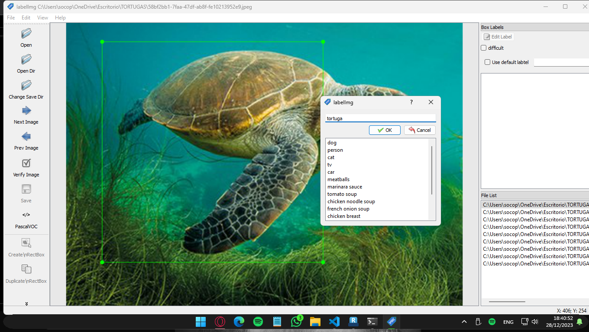

La detección de objetos es una técnica de aprendizaje automático que identifica y localiza objetos dentro de imágenes. Este proyecto utiliza un modelo entrenado en el conjunto de datos COCO, un extenso conjunto de imágenes con más de 80 categorías de objetos.
MobileNetV2 Lite es una versión optimizada y ligera de MobileNetV2, diseñada específicamente para dispositivos con recursos limitados, como smartphones y dispositivos IoT. Esta variante mantiene una precisión razonable mientras reduce significativamente el tamaño y los requisitos computacionales del modelo original.
En el contexto del proyecto de detección de objetos en Android utilizando TensorFlow Lite, MobileNetV2 Lite se considera como una opción alternativa o complementaria a los modelos EfficientDet Lite.
Utilizamos el modelo Mobilenet V2 por su equilibrio entre tamaño y precisión.
Para el entrenamiento se utilizo el siguiente codigo:

El ultimo codigo implementado se encuentra en el archivo:
Training_Model_with_Tensorflow
y para agregar la metadata para conocer las entradas y salidas se ha utilizado codigo que nos proporciona la documentacion oficial y que con ello pueda ser reconocido por visual studio para utilizar nuestro modelo:
Para integrar TensorFlow Lite en un proyecto Android, es esencial incluir las siguientes dependencias:
Estas son las bibliotecas principales que permiten cargar, ejecutar y trabajar con modelos de TensorFlow Lite en dispositivos Android.
La aceleración de GPU permite que las operaciones de inferencia del modelo se ejecuten utilizando el procesador gráfico del dispositivo, lo que puede resultar en tiempos de respuesta más rápidos y un rendimiento mejorado.
Para agregar estas dependencias al proyecto Android, generalmente se utilizan herramientas de gestión de dependencias como Gradle. Aquí hay un ejemplo básico de cómo se vería una configuración de dependencias en el archivo build.gradle del módulo de la aplicación:
dependencies {
// Dependencias básicas de TensorFlow Lite
implementation 'org.tensorflow:tensorflow-lite:2.x.x'
// Dependencia para la aceleración de GPU (si es necesario)
implementation 'org.tensorflow:tensorflow-lite-gpu:2.x.x'
}
El proceso de inicialización del modelo TensorFlow Lite se detalla paso a paso, desde la selección del modelo hasta la configuración de opciones y delegados de hardware.
Se recolectaron varias imagenes y se subieron a la plataforma roboflow ya con sus pesos ponderados utilizando labelImg.

Con labelImg se ha seleccionado el area de reconocimiento para el ObjectDetection necesario y que nuestro modelo pueda entrenar:

Para despues ser utilizado en nuestro codigo ya subido a roboflow.
Se realizaron las predicciones en android studio